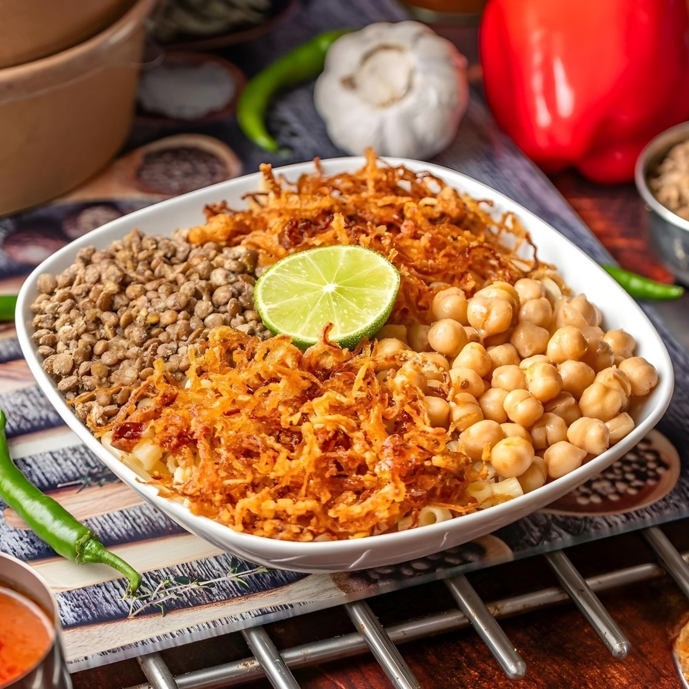
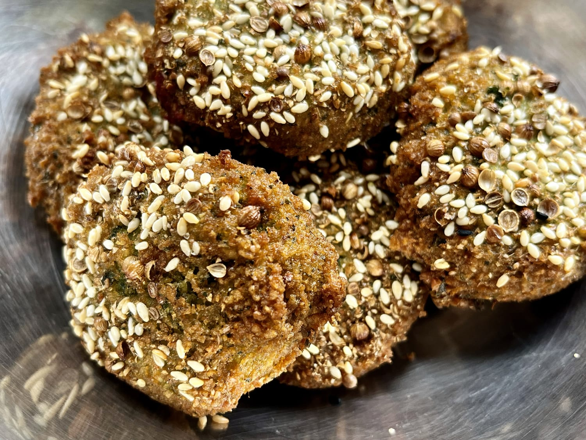
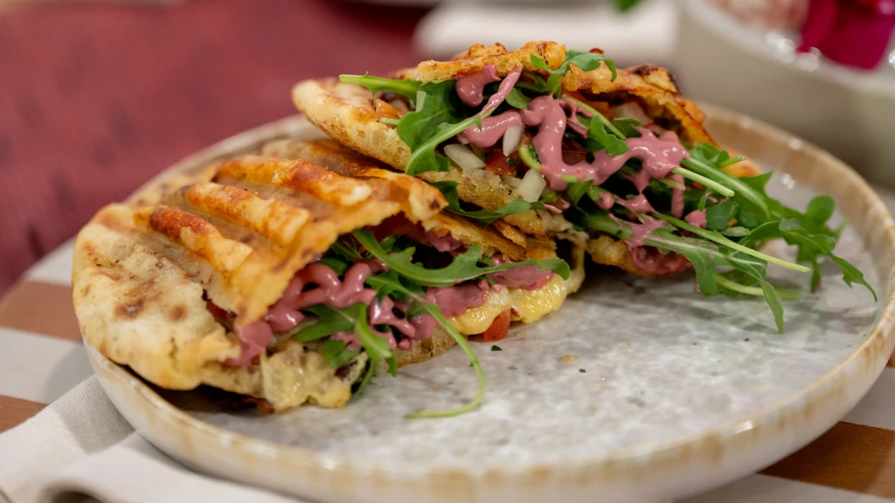
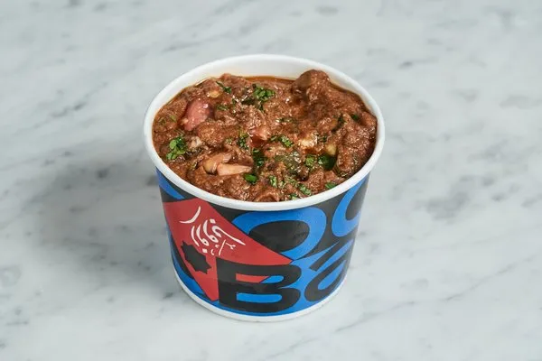

Zooba

⭐ ⭐ ⭐ ⭐ ⭐ (4.7)
Zooba is one of the most famous Egyptian street food restaurants. It offers traditional Egyptian dishes with modern presentation.
Popular Food

Koshari

Falafel

Hawawshi

Foul Sandwich
History
Zooba started in Cairo and quickly became popular due to its modern take on Egyptian street food. It expanded across Cairo and internationally.